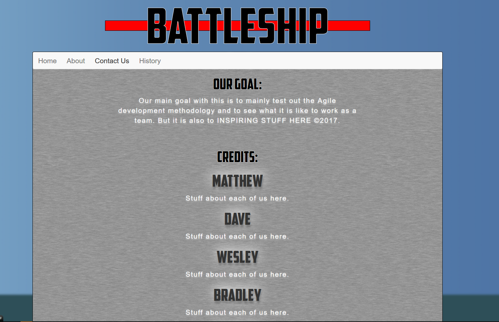
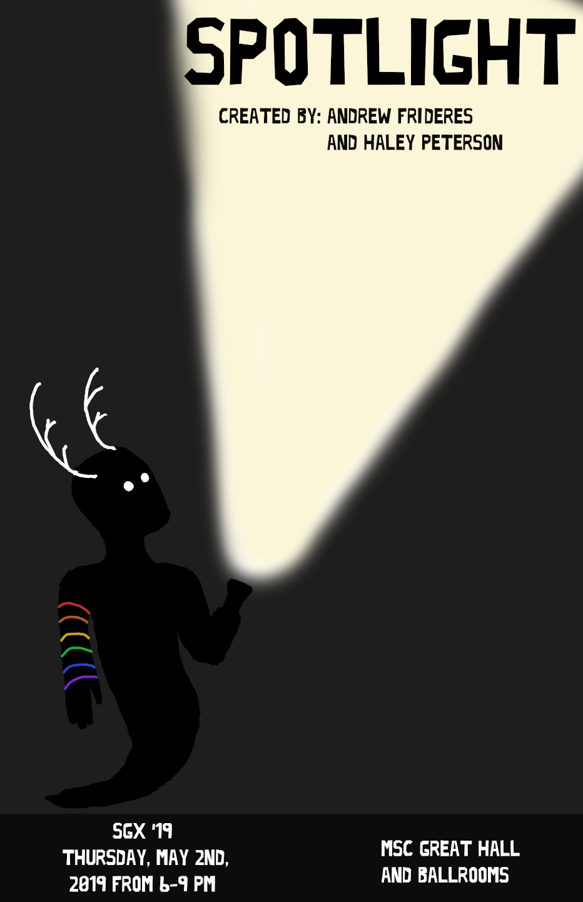
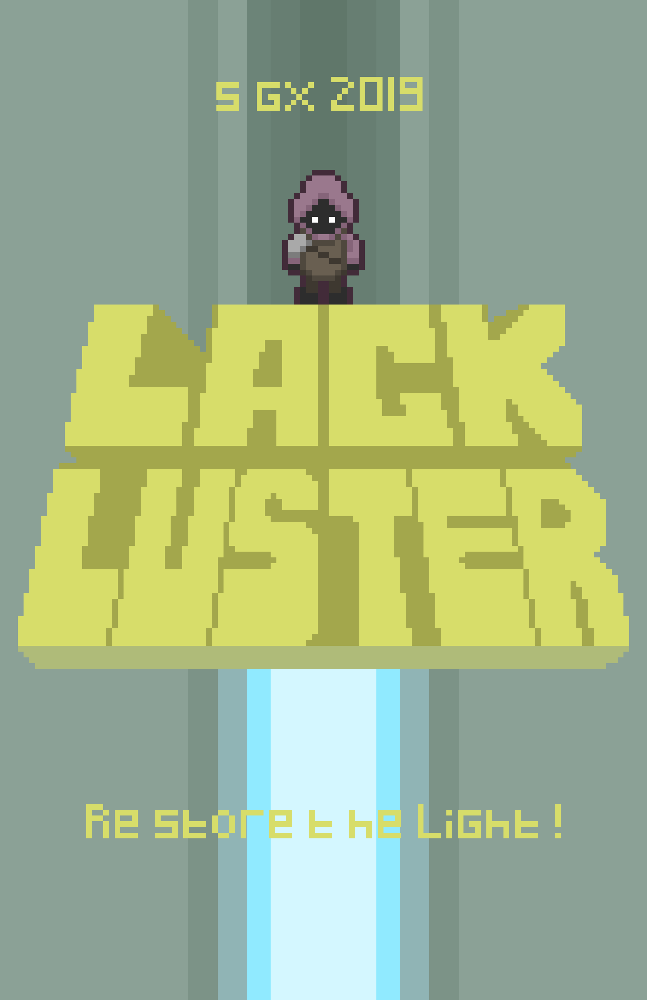
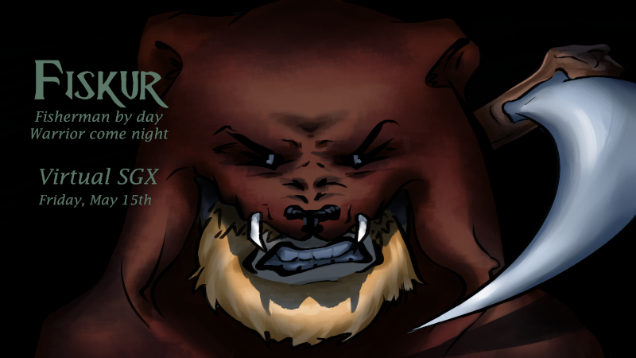

I love playing with all kinds of technology, from the new, to the old. I also have experience with Agile programming practicum, and tend to have an old school mindset on just about everything, from music, to values, to work ethic, and this translates into a lot of who I am. In my spare time I like to play a lot of old school games such as DOOM, pick up a new programming language, or start a new project and just plug away at that. Link to my resume here that includes the languages and projects I've worked on, otherwise I can also be contacted at my email address below.
My role in the group was to combine, test, and ensure we had a deliverable to show off every week. I also had to be able to sit town with team members and have them talk about their additions so that we could log it, and assist in any debugging and merging since that fell into my job role.This was my Capstone project at CVTC and my test for everything I had learned.
My role in this group was to assist with the front end GUI design and CSS styles using bootstrap. In addition I did a page on the history of battleships as a bit of context, and I ended up being a scribe for our group meetings every week. This assignment was a part of my course learning Agile, and so for the first time, I had to work together with a group in order to deliver a product.

A program i made using Visual Studio (2015 initially, updated to 2017), it uses a GUI to allow the user to add, remove, and edit games connected to a mySQL Database and then upon execution does a sort of "spin" to run through all the games and select one, complete with fun sound effects!
A game I created using Swift 2.0, it's more or less a clone of the classic Asteroids game from way back in the day. It is developed to scale gracefully depending on the size of the phone, and has states for playing, power ups, and game over conditions.
My first time using Unity, this is a 2D sidescroller game built for touchscreen Android devices, made with Haley Peterson (artist) at UW-Stout for my GDD 200 class 2019. In this game you play as a little ghost boy in their quest to restore color to the bleak world, with a unique mechanic of using an Android devices built in gyroscope to control where the flashlight you use aims, using it to cut through the dark and expose the world of color below to solve puzzles & progress.

Made at Stout in my GDD 325 class 2019, with Collin Diekvoss (Programmer), Lex Klusman (Artist), and Joshua Haakana (Artist) in Lackluster your goal is to activate all the orbs in order to restore the light to the world. The game was made using Phaser 3.0, and made use of an npm server on the back end, the ultimate goal was to make a fun, easy to play game for the Madison Children's Museum to put on as an interactive exhibit.

Part of my 450 GDD Capstone Fall 2019-Spring 2020, a 3D action adventure game made in Unity, You play as a shipwrecked Viking who has crashed on an island within the arctic. Fitted with only your fishing rod, you set out to catch fish in order to survive the ordeal. After wandering the island for a time, you discover an altar deep within the island dedicated to Njord, God of the Sea. Offering some of your bounty to Njord, he aids you by turning your rod into a weapon capable of surviving the terrors of the night to come...
